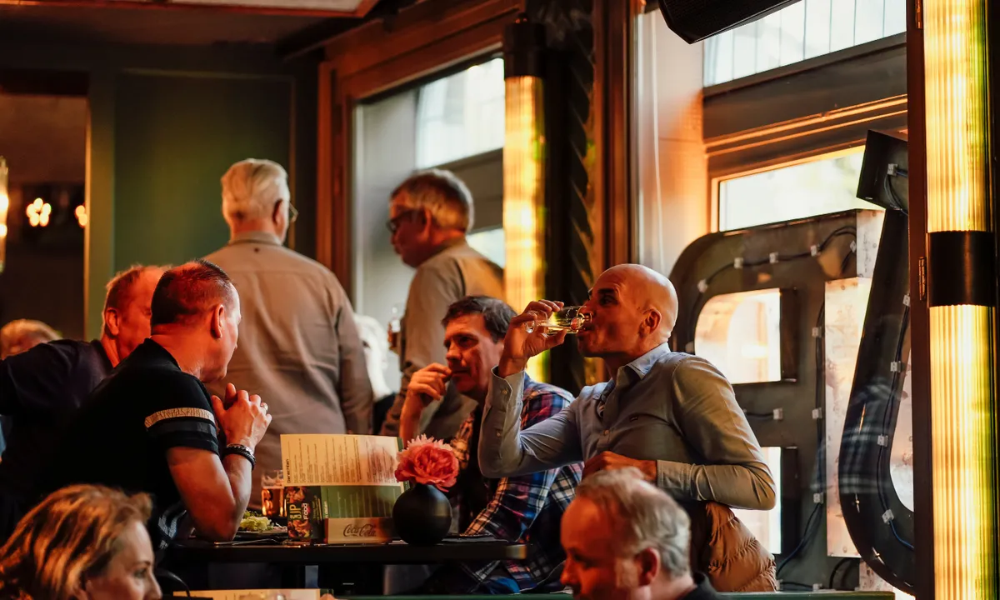
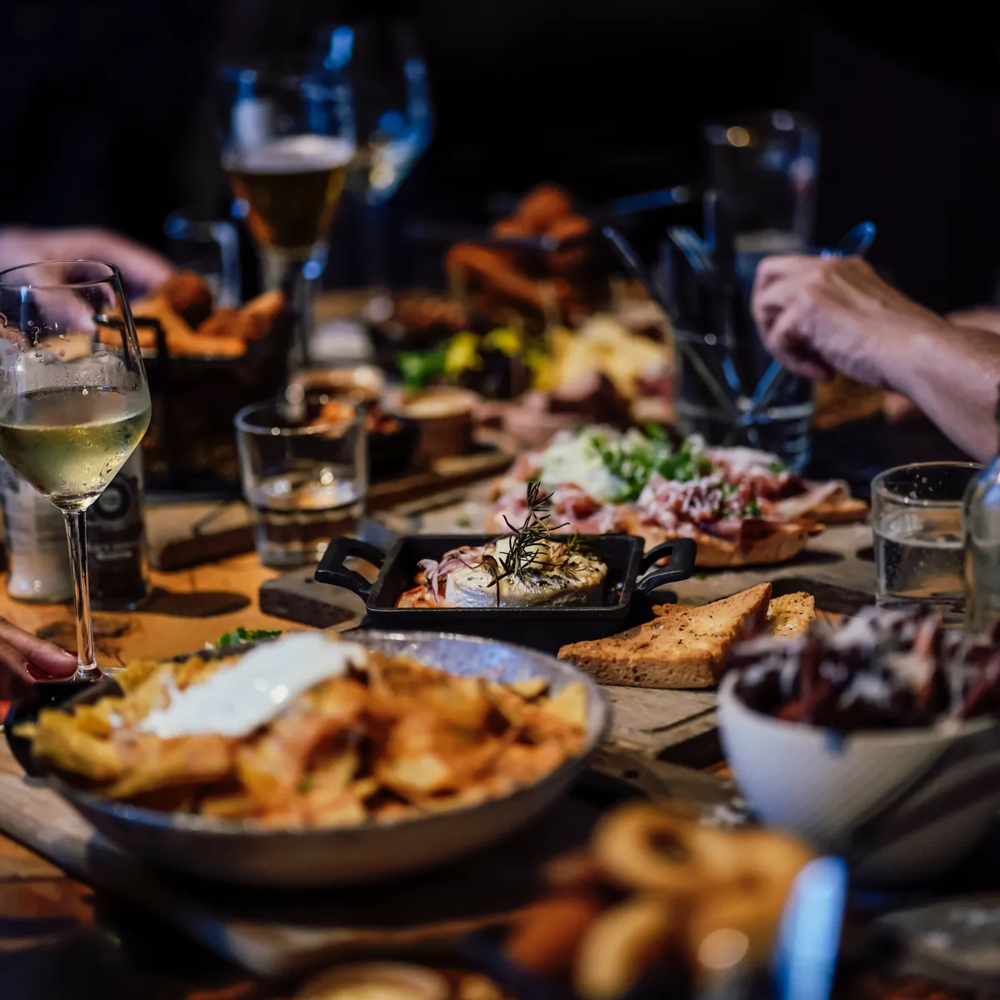
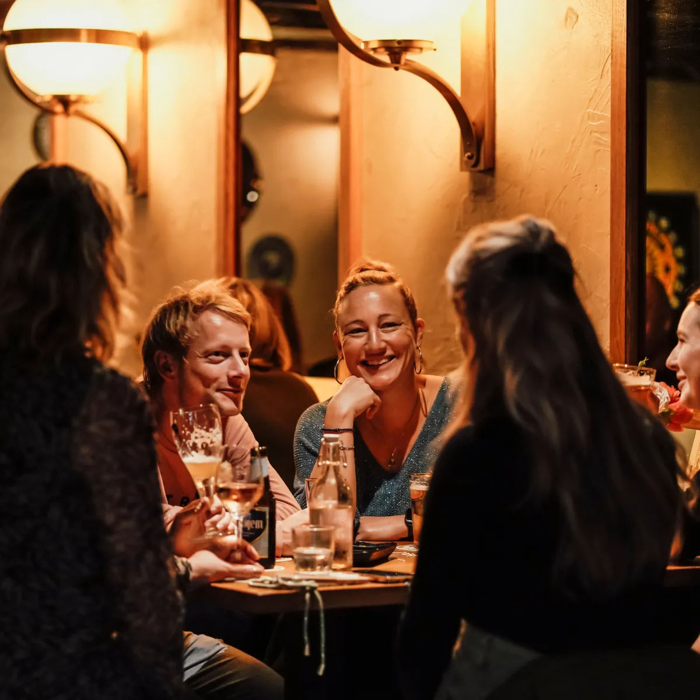
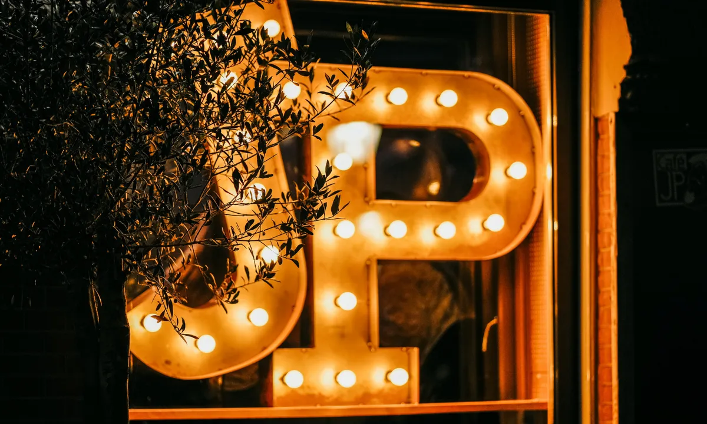
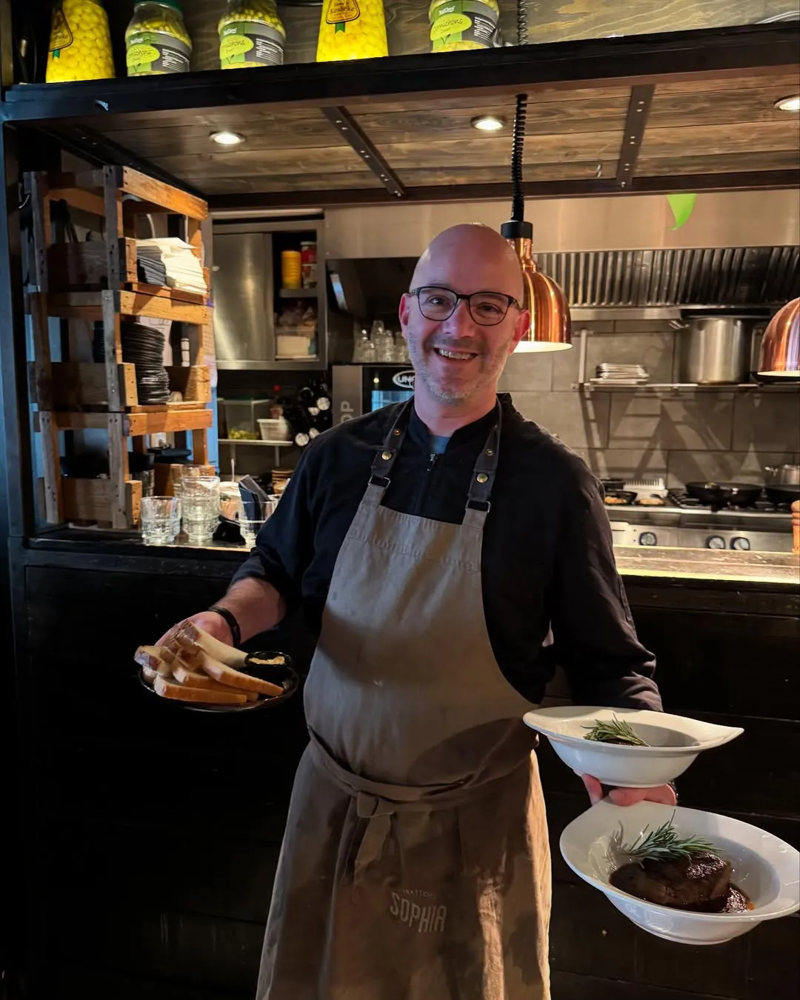

Jouw avond begint bij Café JP
Een restaurant en bar waar gastvrijheid, sfeer en smaak samenkomen in de binnenstad van Hoorn.
Veemarkt 17, HoornWo t/m zo open vanaf 15:00 / 15:30
Van diner tot borrel
Of je nu zin hebt in een klein hapje aan de bar, een uitgebreid diner of een gezellige avond uit: bij Café JP ben je altijd op de juiste plek.

Dineren
Ambachtelijke gerechten met verse ingrediënten, van samen delen tot hoofdgerecht.
Menukaart
Borrelen
Een goed glas, bitterballen van de grootmeester en een vriendenplank voor de hele tafel.
Borrelkaart
Uitgaan
Op vrijdag- en zaterdagavond gaan de tafels en stoelen aan de kant en begint de DJ.
Uitgaan bij JPZo ziet je week bij JP eruit
Maandag en dinsdag zijn we dicht.

Bij Café JP kook ik met passie en verse ingrediënten om elke gast een smaakvolle en verrassende ervaring te bieden. Mijn team en ik staan klaar om u een onvergetelijke avond te bezorgen, met gerechten die met liefde zijn bereid.Een woord van onze chef
Elk weekend een live DJ
Bij Café JP wordt elk weekend een feestje. Elke vrijdag en zaterdag draaien onze DJ's live op ons eigen podium. Verwacht goede muziek, lekkere drankjes en een volle dansvloer in een gezellige setting: feest voor jong en oud.
Ook organiseren we regelmatig thema-avonden en live optredens. En tijdens de grote feestdagen van Hoorn ben je bij ons op de juiste plek.
- Hoornse KermisCombineer een dagje kermis met lekker eten, drankjes en live muziek op ons podium.
- LappendagDe laatste maandag van de kermis: de stad komt tot leven, met live optredens bij ons op het podium.
- KoningsdagProosten op de koning en dansen op live artiesten.
- Hoornse stadsfeestenJouw uitvalsbasis voor een borrel of feestavond met live muziek.
Maak kennis met Café JP
Bij Café JP draait alles om genieten. Al jarenlang zijn wij dé plek in Hoorn voor iedereen die houdt van goed eten, lekkere drankjes en een gezellige, ongedwongen sfeer. Met liefde voor gastvrijheid en oog voor kwaliteit maken wij van elk bezoek een warm en bijzonder moment.
Onze barvrouwen en barheren staan elke dag met passie en plezier klaar om je te laten genieten van heerlijke drankjes, gezellige gesprekken en een warme sfeer.
De gezichten achter Café JP
Reserveren & contact
Heb je een vraag of wil je een tafel reserveren? Bel of mail ons gerust, wij staan voor je klaar.
| Maandag | Gesloten |
| Dinsdag | Gesloten |
| Woensdag | 15:30 – 00:00 |
| Donderdag | 15:30 – 00:00 |
| Vrijdag | 15:00 – 03:00 |
| Zaterdag | 15:00 – 03:00 |
| Zondag | 15:30 – 22:00 |
Café JP
Veemarkt 17
1621 JA Hoorn